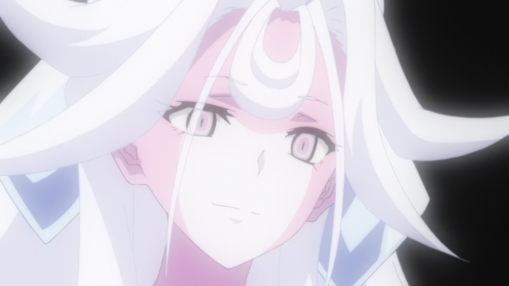

XV
Shem-Ha Mephorash
Después de su muerte en tiempos prehistóricos, el cuerpo y el brazalete de Shem-Ha fueron sellados en un ataúd en las profundidades del lago Vostok en la Antártida. Una de las principales antagonistas de SZS XV , Fudo Kazanari y Noble Red la despiertan de su sueño eterno y renace en el cuerpo de Miku Kohinata.